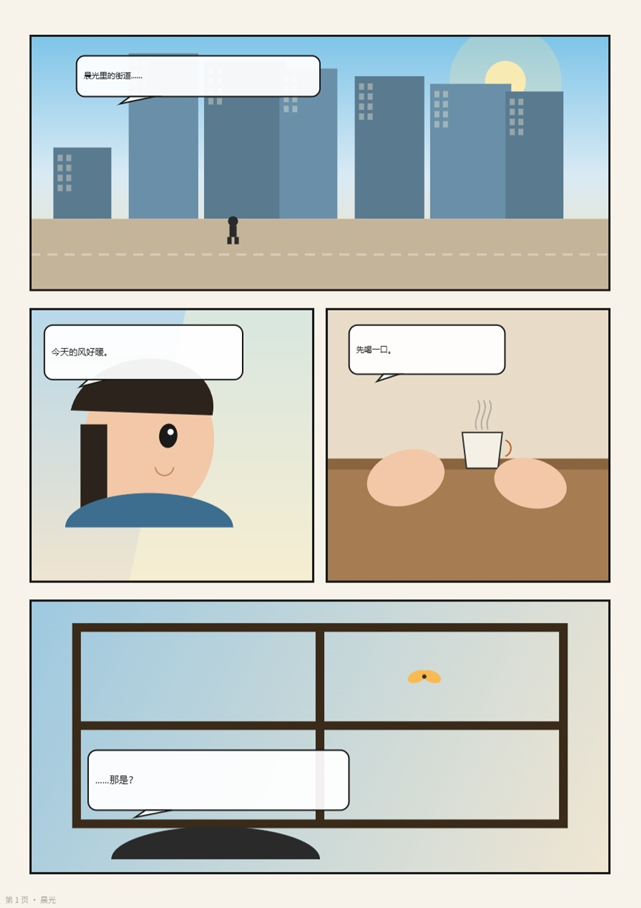
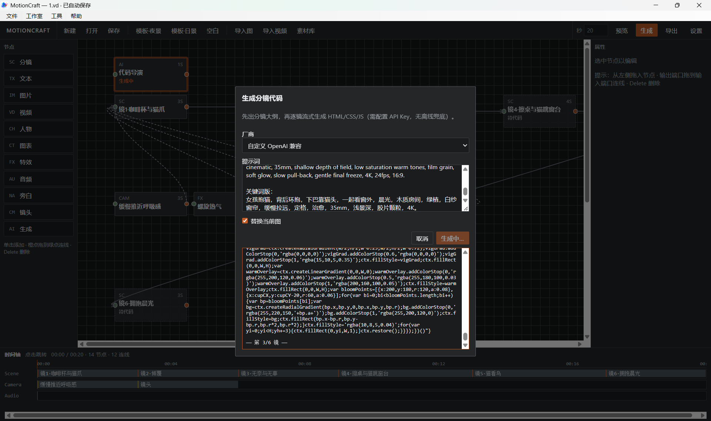

Localhost bridge
Health check, project read/write, add nodes, connect edges, update props — humans and agents share one encrypted .vd graph.
MotionCraft
A Windows AI creation workbench: describe a story, let your LLM write runnable html/css/js for every shot or panel, then preview, revise, and export locally — transparent, editable, under your control.
Core capabilities
The model writes drawing logic — not a sealed media blob. Read it, edit it, regenerate one shot or panel with continuity.
Node graph + timeline: outline, per-shot Canvas code driven by clock t, camera / FX / character layers — export MP4 or WebM.
AI decides panel count, size, and layout; streams still-frame code with manga craft — export PNG sequences or multi-page PDF.
Doubao, DeepSeek, OpenAI, Anthropic, Ollama, or any OpenAI-compatible gateway. Keys stay on your machine (DPAPI) — never plain in the project file.
Keep the app running; Cursor, Doubao, or your scripts drive the same director pipeline and encrypted .vd project truth.
Two product lines · one philosophy
Video aims for cinematic multi-system motion on a clock. Comics aim for ink, screentone, and designed grids as still frames. Same studio; two quality constitutions on purpose.
Scene nodes · clock t · camera / FX / character · MP4 / WebM

Page → panel → shot · AI layout · PNG / PDF
Agent Bridge + MCP
With MotionCraft.exe running, point Cursor or another MCP client at the local bridge. Reasoning stays in the agent; MotionCraft executes node edits, directors, preview, and export on the same quality pipeline as the UI.
Health check, project read/write, add nodes, connect edges, update props — humans and agents share one encrypted .vd graph.
run_director / run_comic_director for full pipelines; scene, character, effect, or comic_shot directors to fix one piece with context.
Trigger preview and export video or comic pages from the agent — outputs land beside your project when possible.
Inside the studio

Outline honors your shot count and durations. Each scene returns setup/draw driven by t. Compile + offscreen trial; no Math.random — seed instead. Failures rewrite for several rounds before landing on the graph.
Four-level narrative cards, then AI-owned panel layouts (no lazy equal grid). Stream still-frame code panel by panel with neighbor context; compose pages for PNG or PDF. v1 targets page comics, not vertical strips.
Library on the left, graph in the center, props and generated code on the right, timeline or page-flip below. Video edges: sequence and attach. Comic edges: sequence, contain, compose.
Projects are encrypted single-file vaults. After code exists you can preview and export offline. Model keys live in AppData under DPAPI — MCP never returns plaintext secrets.
Creation flow
Story, style, beats
Shots or page/panel cards
html / css / js per unit
Compile & offscreen trial
Timeline scrub or page flip
MP4 / WebM or PNG / PDF
Platform
WinForms + WebView2 desktop app. Ordinary laptop — no dedicated AI GPU, no vendor-locked text-to-video subscription. You pick the model and the bill.